Research question:
In modern times, which country is most happy in europe and is there a correlation to believing in god?
Step 1
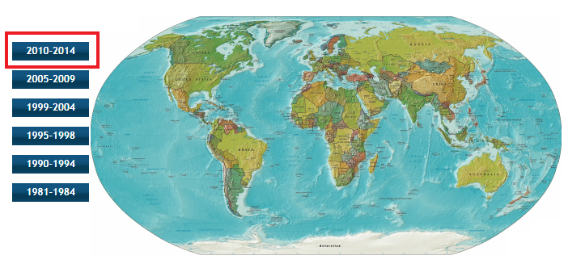
Choose most recent wave to get most recent data.
Step 2
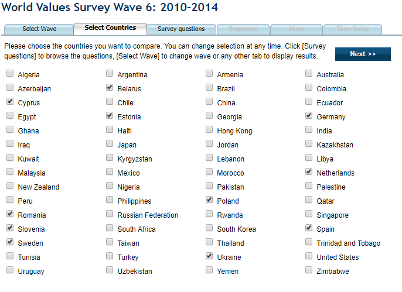
Choose european countries only by selecting them.
Step 3
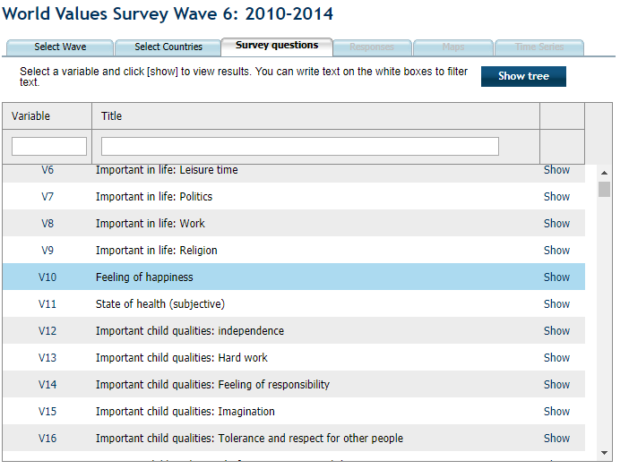
Choose question feeling of happiness, it most resembles what I want to find out.
Step 4
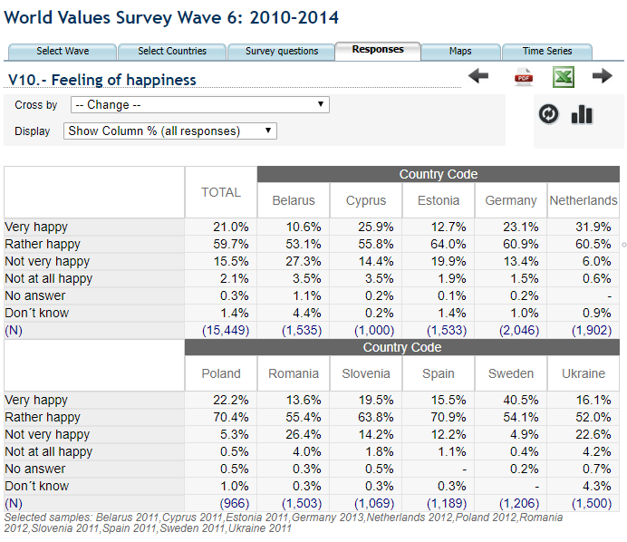
Look at results, Sweden seems to be most happy in europe. Now lets try and find a correlation with belief in god.
Step 5
Cross the question with belief in god
Step 6
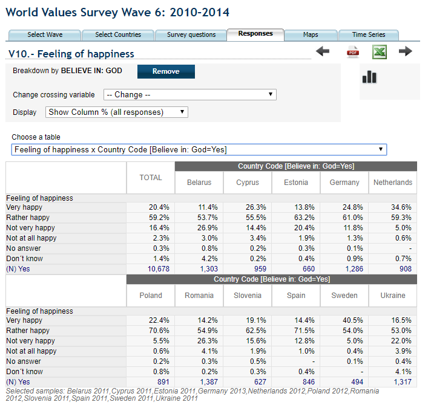
For people believing in god, happiness seems to be the same as with only happiness
Step 7
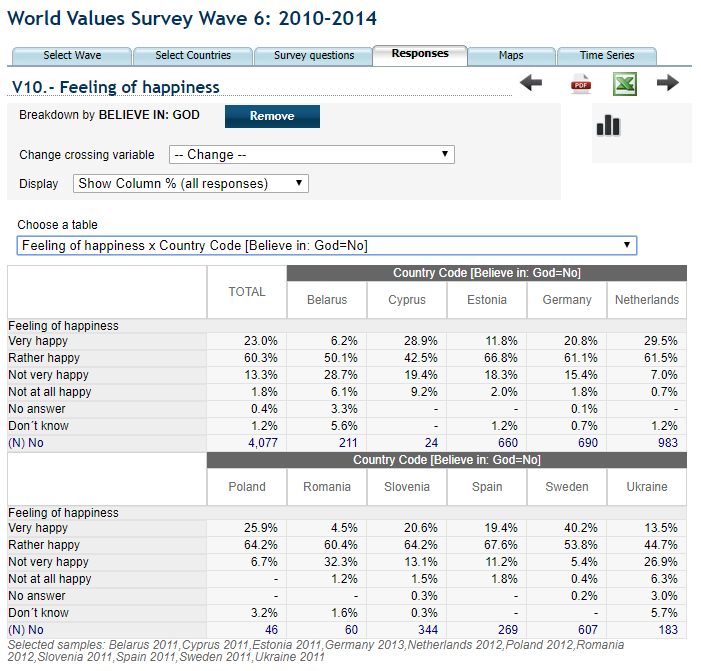
Now change to people not believing in god.
The percentages go slightly up, meaning slightly more people not believeing in god is happier than those who do.
This answers my research question: If you do not believe in god you have a slighlty higher probability of being happier, but
note that the difference is only 2.5% higher for non believers which is too low to draw any real correlation between the two.
Now is there a better view over europe?
Step 8
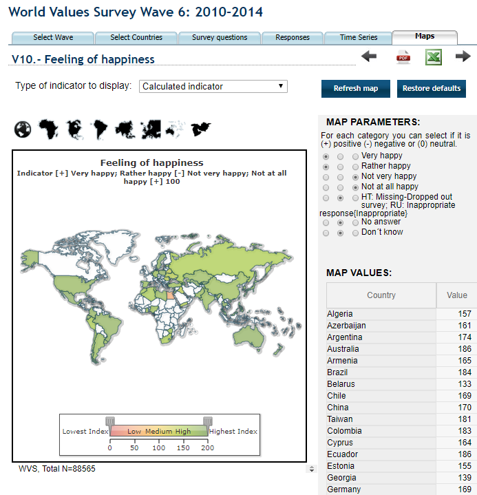
Choose map to more easily compare countries
Step 9
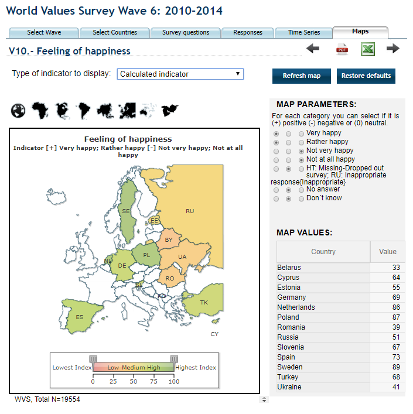
Choose europe only. It seems western europe is more happy than eastern europe. Interesting!
Sweden is still the most happy country, have it always been like that? Could it have changed over time?
Step 10
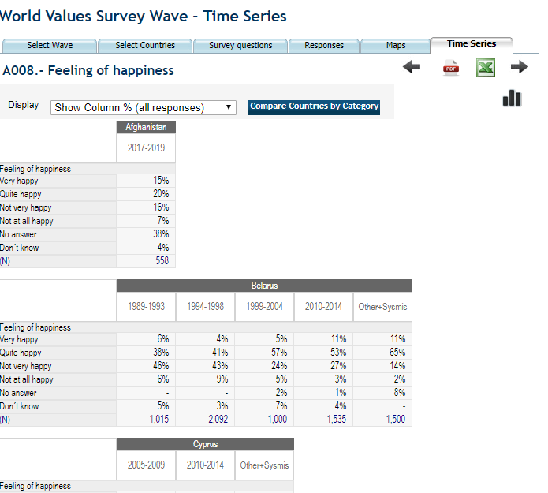
Choose Time series
Step 11
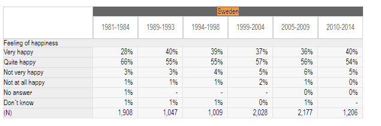
Look at Sweden that was most happy, something happened between the 80s and 90s.
Step 12
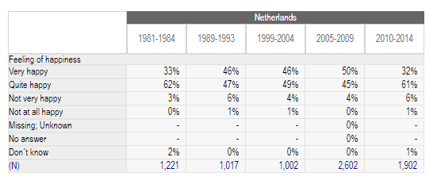
Scroll through the page ans find that Netherlands indeed was more happy than Sweden before.
It was not until the most recent wave that Netherlands dropped in happiness and Sweden became nr 1.